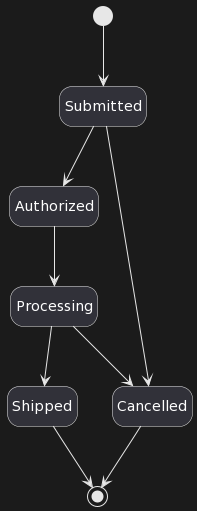

Guillaume Poittevin
Senior Solution Architect chez
 @TheGuit
@TheGuit
Text-to-Diagram
La documentation c'est important
Comment ? Où ?
Bonne pratique
Mettre la documentation à côté du code
Et pour les schémas ?
Heureusement il existe des solutions 🎉
D2, Mermaid, PlantUML, ...
Le principe
DSL → Interprétation → Image
Exemples
@startuml
class Voiture {
immat : text {key}
}
class Personne {
nom : text
prénom : text
}
Personne "1" -- "*" Voiture : conduit
@enduml
Exemples
@startuml
[*] --> Submitted
Submitted --> Authorized
Submitted --> Cancelled
Authorized --> Processing
Processing --> Shipped
Processing --> Cancelled
Shipped --> [*]
Cancelled --> [*]
@enduml

Les avantages
- Open-source et Gratuit
- Intégrable dans CI/CD
- On peut faire de la revue de code
@@ -12,6 +12,7 @@ state "Invoiced" as invoiced
state "Paid" as paid
state "Label created" as labeled
state "Invoiced & Label created" as invoiced_labeled
+state "Label created & Paid" as labeled_paid
state "Shipped" as shipped
state "Received" as received
state "Return pending shipping" as r_p_shipping
@@ -38,16 +39,20 @@ sourced -right-> processing
processing -right-> ready
processing -[dashed]-> cancelled
-ready --> paid
-ready -[dashed]-> cancelled : Debit KO
+ready --> invoiced
+ready --> labeled
-paid --> labeled
-paid --> invoiced
+invoiced --> invoiced_labeled
+invoiced --> paid
+invoiced -[dashed]-> cancelled : Debit KO
+
+paid --> labeled_paid
labeled --> invoiced_labeled
-invoiced --> invoiced_labeled
-invoiced_labeled -down-> shipped
+invoiced_labeled --> labeled_paid
+
+labeled_paid -down-> shipped
shipped --> received
Types de diagramme supportés
- Séquence
- Cas d'utilisation
- Classes
- Objet
- Activité
- Composant
- Déploiement
Types de diagramme supportés
- État
- Temps
- Réseaux
- Archimate
- Gantt
- Idées (mindmap)
- ... et pleins d'autres
BONUS : Le rendu ASCII art
┌─────┠┌───â”
│Alice│ │Bob│
└──┬──┘ └─┬─┘
│Authentication Request │
│───────────────────────>│
│ │
│ │
╔══════╤═════╪════════════════════════╪═══════════╗
║ ALT │ Successful case │ ║
╟──────┘ │ │ ║
║ │Authentication Accepted │ ║
║ │<───────────────────────│ ║
â• â•â•â•â•â•â•â•â•â•â•â•â•â•ªâ•â•â•â•â•â•â•â•â•â•â•â•â•â•â•â•â•â•â•â•â•â•â•â•â•ªâ•â•â•â•â•â•â•â•â•â•â•â•£
║ [Failure] │ │ ║
║ │Authentication Rejected │ ║
║ │<───────────────────────│ ║
╚════════════╪════════════════════════╪═══════════╝
┌──┴──┠┌─┴─â”
│Alice│ │Bob│
└─────┘ └───┘
BONUS
Faites faire vos schémas par ChatGPTCréez un diagramme de composants PlantUML représentant les flux d'intégration des produits et des images pour une entreprise de commerce électronique. Les produits sont d'abord créés dans l'ERP Cegid, et un flux de données quotidien à 4 heures envoie ces produits au PIM Akeneo. Un flux horaire traduit les nouveaux produits à l'aide de la solution OneLingo dans le PIM. Il existe deux flux entre le PIM Akeneo et le DAM AEM pour enrichir les données d'images avec les données de produit, et un autre flux pour associer les images DAM aux produits PIM. Chaque nuit à minuit, un flux va du PIM à la plateforme de commerce électronique Magento pour mettre à jour les produits. Et un autre flux va du DAM vers cette même plateforme de commerce électronique pour mettre à jour les images.
@startuml
!theme materia-outline
title "Flux d'intégration des produits et des images"
package "Système d'Intégration des Produits et des Images" {
actor "ERP Cegid" as erp
actor "PIM Akeneo" as pim
actor "Solution OneLingo" as onelingo
actor "DAM AEM" as dam
actor "Plateforme de e-commerce Magento" as magento
erp -down-> pim : "Flux de données (tous les jours à 4h)"
pim -down-> onelingo : "Flux de traduction (toutes les heures)"
onelingo -down-> pim : "Produits traduits"
pim -down-> dam : "Flux d'enrichissement des données images (1)"
dam -down-> pim : "Flux d'enrichissement des données produits (2)"
dam -down-> magento : "Flux de mise à jour des images (tous les jours à minuit)"
pim -down-> magento : "Flux de mise à jour des produits (tous les jours à minuit)"
}
@enduml
À vous de jouer 🦸
Liens
- Site officiel de PlantUML
- Comparaison d'outils de texte vers diagramme*
- Présentation faite avec revealjs
* par les créateurs de D2